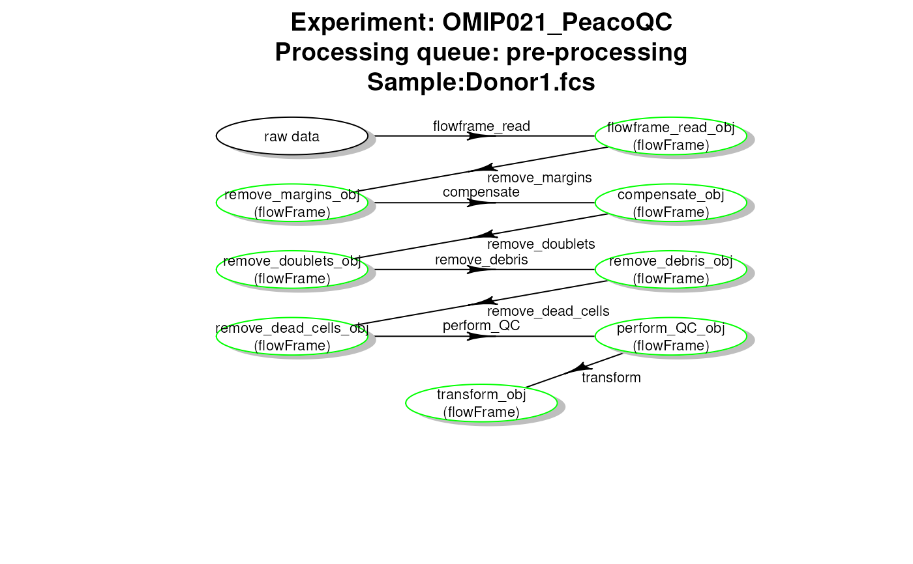

inspect CytoPipeline results objects
Source:R/CytoPipeline-functions.R
inspectCytoPipelineObjects.Rdfunctions to obtain results objects formats
Usage
getCytoPipelineExperimentNames(
path = ".",
pattern = NULL,
ignore.case = FALSE,
fixed = FALSE
)
getCytoPipelineObjectFromCache(
x,
path = ".",
whichQueue = c("scale transform", "pre-processing"),
sampleFile = NULL,
objectName
)
getCytoPipelineObjectInfos(
x,
path = ".",
whichQueue = c("scale transform", "pre-processing"),
sampleFile = NULL
)
getCytoPipelineFlowFrame(
x,
path = ".",
whichQueue = c("scale transform", "pre-processing"),
sampleFile,
objectName
)
getCytoPipelineScaleTransform(
x,
path = ".",
whichQueue = c("scale transform", "pre-processing"),
sampleFile = NULL,
objectName
)
plotCytoPipelineProcessingQueue(
x,
whichQueue = c("pre-processing", "scale transform"),
purpose = c("run status", "description"),
sampleFile = NULL,
path = ".",
title = TRUE,
box.type = "ellipse",
lwd = 1,
box.prop = 0.5,
box.cex = 0.7,
cex.txt = 0.7,
box.size = 0.1,
dtext = 0.15,
...
)
collectNbOfRetainedEvents(experimentName, path = ".", whichSampleFiles)Arguments
- path
root path to locate the search for file caches
- pattern
optional pattern limiting the search for experiment names
- ignore.case
(TRUE/FALSE) used in pattern matching (grepl)
- fixed
(TRUE/FALSE) used in pattern matching (grepl)
- x
a CytoPipeline object
- whichQueue
which queue to look into
- sampleFile
which sampleFile is looked for:
if whichQueue == "scale transform", the sampleFile is ignored
if NULL and whichQueue == "pre-processing", the sampleFile is defaulted to the first one belonging to the experiment
- objectName
(character) which object name to look for
- purpose
purpose of the workflow plot
if "run status" (default), the disk cache will be inspected and the box colours will be set according to run status (green = run, orange = not run, red = definition not consistent with cache). Moreover, the object classes and names will be filled in if found in the cache.
if "description", the workflow will be obtained from the step definition in the
xobject, not from the disk cache. As a result, all boxes will be coloured in black, and no object class and name will be provided.
- title
if TRUE, adds a title to the plot
- box.type
shape of label box (rect, ellipse, diamond, round, hexa, multi)
- lwd
default line width of arrow and box (one numeric value)
- box.prop
length/width ratio of label box (one numeric value)
- box.cex
relative size of text in boxes (one numeric value)
- cex.txt
relative size of arrow text (one numeric value)
- box.size
size of label box (one numeric value)
- dtext
controls the position of arrow text relative to arrowhead (one numeric value)
- ...
other arguments passed to diagram::plotmat()
- experimentName
the experimentName used to select the file cache on disk
- whichSampleFiles
indicates for which sample files the number of retained events are to be collected. If missing, all sample files will be used.
Value
for
getCytoPipelineExperimentNames: a vector of character containing found experiment names
for
getCytoPipelineObjectFromCache: the found object (or stops with an error message if the target object is not found)
for
getCytoPipelineObjectInfos: a dataframe with the collected information about the found objects (or stops with an error message if no target object was found)
for
getCytoPipelineFlowFrame: the found flowFrame (or stops with an error message if the target object is not found, or if the object is no flowFrame)
for
getCytoPipelineScaleTransform: the found flowFrame (or stops with an error message if the target object is not found, or if the object is no transformList)
for
plotCytoPipelineProcessingQueue: nothing
for
collectNbOfRetainedEvents: a dataframe with the collected number of events columns refer to pre-processing steps rows refer to samples
Functions
getCytoPipelineExperimentNames(): This function looks into a path for stored file caches and gets the corresponding experiment namesgetCytoPipelineObjectFromCache(): Given a CytoPipeline object, this function retrieves a specific object in the corresponding file cachegetCytoPipelineObjectInfos(): Given a CytoPipeline object, this function retrieves the information related to a specific object name, i.e. object name and object classgetCytoPipelineFlowFrame(): Given a CytoPipeline object, this function retrieves a specific flowCore::flowFrame object in the corresponding file cache object name and object classgetCytoPipelineScaleTransform(): Given a CytoPipeline object, this function retrieves a specific flowCore::transformList object in the corresponding file cacheplotCytoPipelineProcessingQueue(): This functions displays a plot of a processing queue of a CytoPipeline object, using diagram::plotmat().If a step is in run state for all sample files, the corresponding box appears in green
If a step is in non run state for at least one sample file, the corresponding box appears in orange
If at least one step is not consistent with cache, the whole set of boxes appears in red
collectNbOfRetainedEvents(): Given a CytoPipeline object, this function retrieves, for all pre-processing steps, given the output is a flowFrame, the number of retained event.
Examples
# preliminary run:
# build CytoPipeline object using json input, run and store results in cache
rawDataDir <-
system.file("extdata", package = "CytoPipeline")
experimentName <- "OMIP021_PeacoQC"
sampleFiles <- file.path(rawDataDir, list.files(rawDataDir,
pattern = "Donor"))
jsonDir <- system.file("extdata", package = "CytoPipeline")
jsonPath <- file.path(jsonDir, "pipelineParams.json")
outputDir <- base::tempdir()
pipL <- CytoPipeline(jsonPath,
experimentName = experimentName,
sampleFiles = sampleFiles)
# note we temporarily set working directory into package root directory
# needed as json path mentions "./" path for sample files
suppressWarnings(execute(pipL, rmCache = TRUE, path = outputDir))
#> #####################################################
#> ### running SCALE TRANSFORMATION processing steps ###
#> #####################################################
#> Proceeding with step 1 [flowframe_read] ...
#> Proceeding with step 2 [remove_margins] ...
#> Removing margins from file : Donor1.fcs
#> Removing margins from file : Donor2.fcs
#> Proceeding with step 3 [compensate] ...
#> Proceeding with step 4 [flowframe_aggregate] ...
#> Proceeding with step 5 [scale_transform_estimate] ...
#> #####################################################
#> ### NOW PRE-PROCESSING FILE /__w/_temp/Library/CytoPipeline/extdata/Donor1.fcs...
#> #####################################################
#> Proceeding with step 1 [flowframe_read] ...
#> Proceeding with step 2 [remove_margins] ...
#> Removing margins from file : Donor1.fcs
#> Proceeding with step 3 [compensate] ...
#> Proceeding with step 4 [remove_doublets] ...
#> Proceeding with step 5 [remove_debris] ...
#> Proceeding with step 6 [remove_dead_cells] ...
#> Proceeding with step 7 [perform_QC] ...
#> Applying PeacoQC method...
#> Starting quality control analysis for Donor1.fcs
#> Calculating peaks
#> MAD analysis removed 30.75% of the measurements
#> The algorithm removed 30.75% of the measurements
#> Proceeding with step 8 [transform] ...
#> #####################################################
#> ### NOW PRE-PROCESSING FILE /__w/_temp/Library/CytoPipeline/extdata/Donor2.fcs...
#> #####################################################
#> Proceeding with step 1 [flowframe_read] ...
#> Proceeding with step 2 [remove_margins] ...
#> Removing margins from file : Donor2.fcs
#> Proceeding with step 3 [compensate] ...
#> Proceeding with step 4 [remove_doublets] ...
#> Proceeding with step 5 [remove_debris] ...
#> Proceeding with step 6 [remove_dead_cells] ...
#> Proceeding with step 7 [perform_QC] ...
#> Applying PeacoQC method...
#> Starting quality control analysis for Donor2.fcs
#> Calculating peaks
#> MAD analysis removed 24.38% of the measurements
#> The algorithm removed 24.38% of the measurements
#> Proceeding with step 8 [transform] ...
# get a list of all stored experiments in a specific path taken as root dir
experimentNames <- getCytoPipelineExperimentNames(path = outputDir)
# rebuilding Cytopipeline object from cache
pipL2 <- buildCytoPipelineFromCache(experimentName = experimentNames[1],
path = outputDir)
# plot scale transformation queue
plotCytoPipelineProcessingQueue(pipL2, whichQueue = "pre-processing",
path = outputDir)
#> no sample file passed as argument => defaulting to first sample file

# plot pre-processing queue
plotCytoPipelineProcessingQueue(pipL2, whichQueue = "scale transform",
path = outputDir)
 # get object infos for a specific queue
df <- getCytoPipelineObjectInfos(pipL2, whichQueue = "pre-processing",
path = outputDir,
sampleFile = sampleFiles(pipL2)[1])
# get transform list (output of one step)
trans <-
getCytoPipelineScaleTransform(pipL2, whichQueue = "scale transform",
objectName =
"scale_transform_estimate_obj",
path = outputDir)
# get flowFrame (output of one step)
ff <- getCytoPipelineFlowFrame(pipL2, whichQueue = "pre-processing",
objectName = "remove_doublets_obj",
path = outputDir,
sampleFile = sampleFiles(pipL2)[1])
# get any object (output of one step)
obj <-
getCytoPipelineObjectFromCache(pipL2, whichQueue = "scale transform",
objectName = "compensate_obj",
path = outputDir)
class(obj) # flowCore::flowSet
#> [1] "flowSet"
#> attr(,"package")
#> [1] "flowCore"
# collect number of retained events at each step
nbEventsDF <- collectNbOfRetainedEvents(
experimentName = experimentNames[1],
path = outputDir)
# get object infos for a specific queue
df <- getCytoPipelineObjectInfos(pipL2, whichQueue = "pre-processing",
path = outputDir,
sampleFile = sampleFiles(pipL2)[1])
# get transform list (output of one step)
trans <-
getCytoPipelineScaleTransform(pipL2, whichQueue = "scale transform",
objectName =
"scale_transform_estimate_obj",
path = outputDir)
# get flowFrame (output of one step)
ff <- getCytoPipelineFlowFrame(pipL2, whichQueue = "pre-processing",
objectName = "remove_doublets_obj",
path = outputDir,
sampleFile = sampleFiles(pipL2)[1])
# get any object (output of one step)
obj <-
getCytoPipelineObjectFromCache(pipL2, whichQueue = "scale transform",
objectName = "compensate_obj",
path = outputDir)
class(obj) # flowCore::flowSet
#> [1] "flowSet"
#> attr(,"package")
#> [1] "flowCore"
# collect number of retained events at each step
nbEventsDF <- collectNbOfRetainedEvents(
experimentName = experimentNames[1],
path = outputDir)